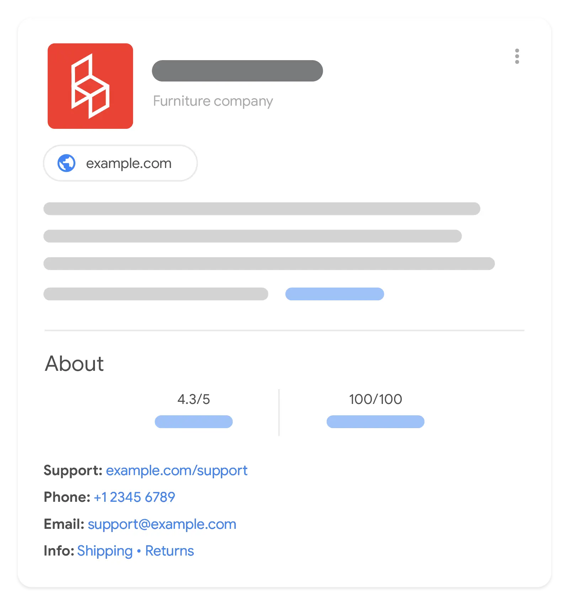

短答
组织标记点名站点已经展示的公司、URL 和标志。
知识面板图片是一种展示的例子，不是这份标记会产生的面板。SEO 健康检查法定名称、规范首页 URL 和标志是否与关于页一致。额外的社交资料应该是真实资料，不是因为生成器列出了它们就加上的空字段。
定义
一个组织实体应该描述一家公司。因为模板到处粘贴代码块就把每个产品页标成不同的组织，会很吵，但比每页粘贴不同的名称危害小。名称保持稳定。GEO 的实体工作仍然需要正文说明你是谁。标记只是重复它。
这种标记能做什么、不能做什么
使用与关于页一致的、稳定的组织名称、首页 URL 和标志。
不要在组织标记里添加站点没有展示的奖项、评分或客户名单。这些字段会变成机器可读位置上的虚假主张。Mika Visibility 不把客户标志或奖项当作证明来发布，本文也不会指导站点在 JSON-LD 里编造它们。

要检查什么
- 一个与关于页一致的名称
- 规范首页 URL 和唯一标志
- 没有只在标记里添加的奖项或客户
- 重复该代码块的模板使用同一个实体
- 比较一条关于 URL 和一条产品 URL
一个结构示例
关于页写“Northline Components”，标记在一些模板上写“Northline”，在另一些上写“Northline Inc.”，还有三个标志文件。修复是采用关于页的名称、一个标志 URL 和 https 首页。面板插图不是测试。一致才是。
它不声称什么
组织标记不保证知识面板、排名或引用。
Mika Visibility 把它归到哪里
Mika Visibility 把结构化数据当作技术性的 SEO 健康题目：标记应与可见事实一致，并且能被干净解析。它不出售富媒体结果的位置。GEO 仍然关心实体和证据在正文里是否可理解。重复口号的标记不会制造证据。
面板图是展示的例子，不是标记的交付物。
常见问题
组织标记应该点名什么？
组织标记点名站点已经展示的公司、URL 和标志。
名称必须匹配什么？
使用与关于页一致的、稳定的组织名称、首页 URL 和标志。
标记能保证知识面板吗？
组织标记不保证知识面板、排名或引用。
下一步
做一次结构化的 SEO + GEO 审计，查看健康发现、增长缺口和可以执行的蓝图。
更清晰的实体、答案、证据和上下文，会让页面更容易被理解与引用。任何回答产品中的结果都不作保证。